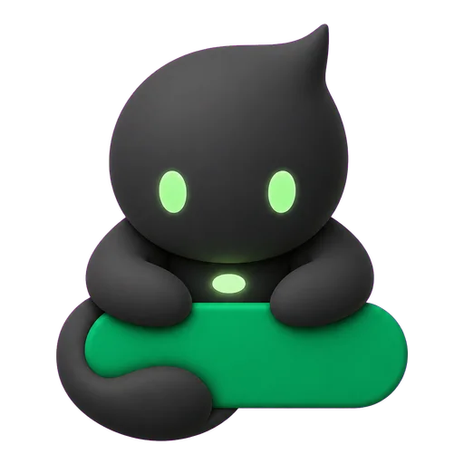

状态正常0 个活跃任务
暂时没有待跟进的任务
新的 Codex 活动会显示在这里，并同步反映精灵状态。
空闲 · 没有活跃任务
主窗口、任务状态、未登录引导与设置页的统一视觉方案。
StatusBarPetBackgroundColor.resolved(for:) 保持一致：空闲中性、思考紫、执行蓝、检查青、等待橙、完成绿、中止红。当前所选 Pet 同时驱动状态栏、悬停卡片和本窗口的动画帧。当前没有正在执行的 Codex 任务
新的 Codex 活动会显示在这里，并同步反映精灵状态。
设计宠物精灵陪伴主窗口
正在编辑 ui-concepts.html，Pet 会继续保持工作动画。
任务需要你的下一步操作
请回到 Codex 完成确认。Codexling 不在这里替代原始确认流程。

查看当前任务、精灵状态和额度。
授权会在官方 ChatGPT / Codex 页面完成。
颜色与任务状态同步，或固定一种颜色。

双计量卡用于主窗口；数据源和状态栏逻辑均复用 CodexUsageSnapshot。
hasShortWindow == true
shortWindow == nil 或 total == 0
~/.codex/pets/codexling，之后可在“当前 Pet”选择。isCodexlingPetInstalled == false 时显示这张卡。安装成功后调用 reloadPets()，卡片消失，并把 selectedPetID 设为 custom:codexling；如果已安装，永不重复展示。